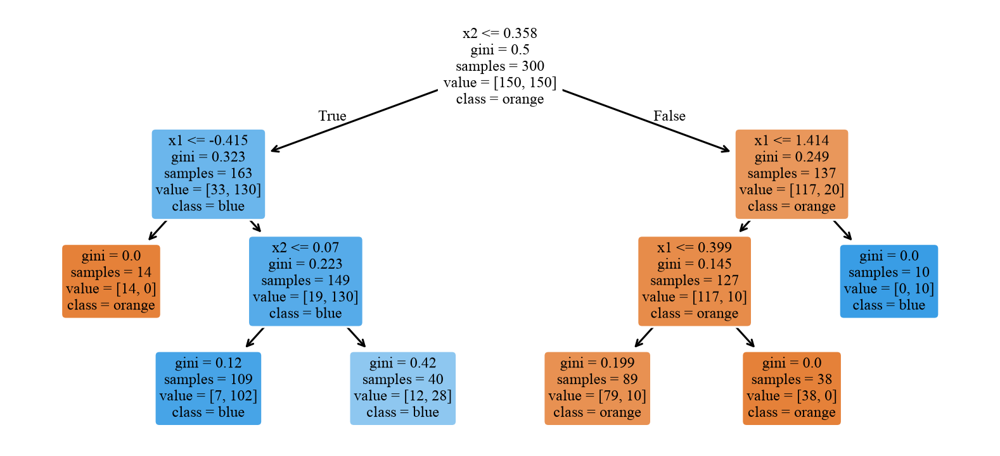
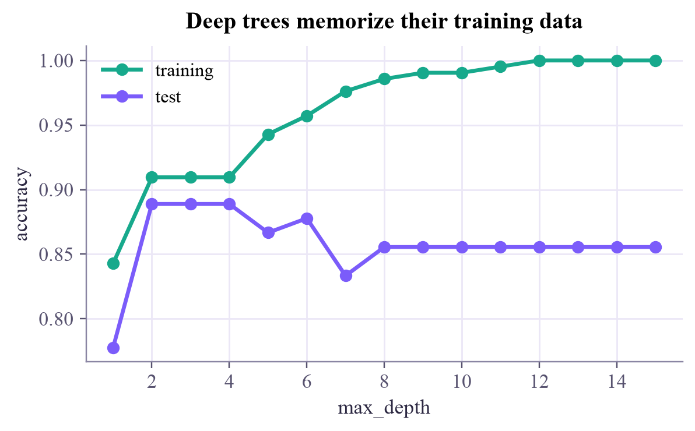

training accuracy of a depth-3 tree: 0.903

A classifier that plays Twenty Questions: one yes/no question about one feature at a time, chosen to make the groups as pure as possible.

Remember the game Twenty Questions? "Is it bigger than a cat? Does it live in water?" A decision tree classifies the same way, and unlike most models you can read it like a flowchart. Your course covered trees in September, so today is about seeing how a tree picks its questions.
A decision tree asks one question about one feature at each step, like "is ?", and follows the yes or no branch until it reaches a leaf, which holds a prediction (the majority class there). Each question cuts the plane with a vertical or horizontal line, so a tree carves the data into boxes.
Which question? The one that makes the two groups purest. For a group in which a fraction is class 1, the Gini impurity is
A split into a left group and a right group is scored by the weighted impurity . The tree tries every feature and every threshold and keeps the lowest score. Then it does the same inside each box, and so on. (Another popular purity score is the entropy, used by the ID3 algorithm in Mitchell's book; the trees come out very similar.)
Grow a tree deep enough and every leaf becomes pure: it memorizes the training set, noise and all. Limits like max_depth keep it honest.
First, one feature and one question. Slide the threshold and watch the weighted impurity, or let the button find the minimum.
Now a whole tree on two features. Each press of Grow adds one more level of questions.
Grow until the training accuracy is 100%. Look at the tiny boxes wrapped around single points: that's overfitting, drawn as rectangles. (The forest switch is tomorrow's topic, but you can peek.)
ml-w3d4.ipynb. To change the code and run it yourself, open the notebook in Google Colab (free, in your browser) or download it for your own Jupyter.import numpy as np
import matplotlib.pyplot as plt
from sklearn.datasets import make_moons
from sklearn.tree import DecisionTreeClassifier, plot_tree
X, y = make_moons(n_samples=300, noise=0.25, random_state=3)
tree = DecisionTreeClassifier(max_depth=3, random_state=0).fit(X, y)
print("training accuracy of a depth-3 tree:", round(tree.score(X, y), 3))
plt.figure(figsize=(9, 4))
plot_tree(tree, feature_names=["x1", "x2"], class_names=["orange", "blue"], filled=True, rounded=True, fontsize=8)
plt.show()training accuracy of a depth-3 tree: 0.903

def gini(labels):
if len(labels) == 0:
return 0.0
p = np.mean(labels)
return 1 - p ** 2 - (1 - p) ** 2
root = tree.tree_
t, f = root.threshold[0], root.feature[0]
left, right = y[X[:, f] <= t], y[X[:, f] > t]
print(f"first question: x{f + 1} <= {t:.3f}")
print(f"before: Gini {gini(y):.3f} (all {len(y)} examples)")
print(f"after: left {len(left)} examples, Gini {gini(left):.3f}; right {len(right)}, Gini {gini(right):.3f}")
print(f"weighted Gini = {(len(left) * gini(left) + len(right) * gini(right)) / len(y):.3f} (scikit-learn: {root.impurity[0]:.3f} before the split)")first question: x2 <= 0.358 before: Gini 0.500 (all 300 examples) after: left 163 examples, Gini 0.323; right 137, Gini 0.249 weighted Gini = 0.289 (scikit-learn: 0.500 before the split)
from sklearn.model_selection import train_test_split
X_tr, X_te, y_tr, y_te = train_test_split(X, y, test_size=0.3, random_state=0)
depths = range(1, 16)
train_acc, test_acc = [], []
for d in depths:
m = DecisionTreeClassifier(max_depth=d, random_state=0).fit(X_tr, y_tr)
train_acc.append(m.score(X_tr, y_tr))
test_acc.append(m.score(X_te, y_te))
plt.figure(figsize=(6, 3.2))
plt.plot(depths, train_acc, "o-", color="#17a98c", label="training")
plt.plot(depths, test_acc, "o-", color="#7b5cfa", label="test")
plt.xlabel("max_depth")
plt.ylabel("accuracy")
plt.legend()
plt.title("Deep trees memorize their training data")
plt.show()
from sklearn.datasets import load_breast_cancer
bc = load_breast_cancer()
m = DecisionTreeClassifier(max_depth=4, random_state=0).fit(bc.data, bc.target)
order = np.argsort(-m.feature_importances_)[:5]
for i in order:
print(f"{bc.feature_names[i]:>24}: importance {m.feature_importances_[i]:.2f}") worst radius: importance 0.74
worst concave points: importance 0.11
mean concave points: importance 0.04
worst texture: importance 0.04
mean texture: importance 0.03Write best_split(x, labels) for one feature: try a threshold halfway between each pair of neighboring values, score each with the weighted Gini, and keep the best. Does it agree with a scikit-learn tree of depth 1?
def best_split(x, labels):
values = np.unique(x)
best_t, best_score = None, np.inf
for a, b in zip(values[:-1], values[1:]):
t = (a + b) / 2
# TODO: weighted Gini of labels[x <= t] and labels[x > t]; keep the lowest
return best_t, best_score
print("mine: ", best_split(X[:, 0], y))
stump = DecisionTreeClassifier(max_depth=1).fit(X[:, [0]], y)
print("sklearn:", stump.tree_.threshold[0])Inside the loop: L, R = labels[x <= t], labels[x > t], then the weighted score with the gini function from cell 2.
def best_split(x, labels):
values = np.unique(x)
best_t, best_score = None, np.inf
for a, b in zip(values[:-1], values[1:]):
t = (a + b) / 2
L, R = labels[x <= t], labels[x > t]
score = (len(L) * gini(L) + len(R) * gini(R)) / len(labels)
if score < best_score:
best_t, best_score = t, score
return best_t, best_score
t, s = best_split(X[:, 0], y)
print(f"mine: threshold {t:.4f}, weighted Gini {s:.4f}")
print(f"sklearn: threshold {stump.tree_.threshold[0]:.4f}")
print("A whole tree repeats this search for every feature, in every box, level after level.")mine: threshold 1.2211, weighted Gini 0.3755 sklearn: threshold 1.2211 A whole tree repeats this search for every feature, in every box, level after level.
Trees are often the strongest classical baseline on small tabular datasets. When a QML paper claims a quantum classifier wins, a good first question is: did it beat a well-tuned forest or boosted trees? You'll ask exactly that in the Quantum ML tutorial's final week.
ISLP section 8.1 (the basics of decision trees) and Mitchell's chapter 3 (decision tree learning, with entropy and information gain).
Next in Machine Learning: tomorrow's short lesson, forests, where many trees vote.
Tap the button to save it. Short and steady wins.
Marked by mistake? Undo